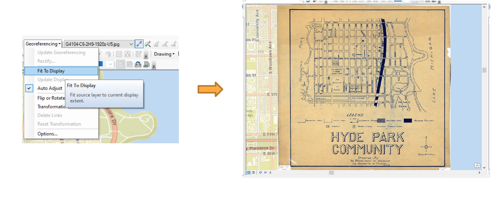
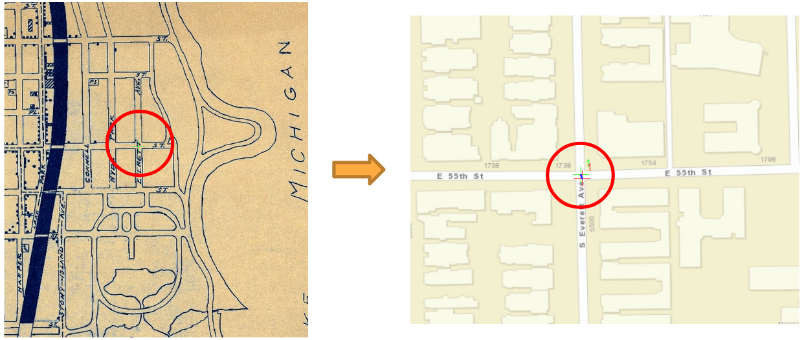
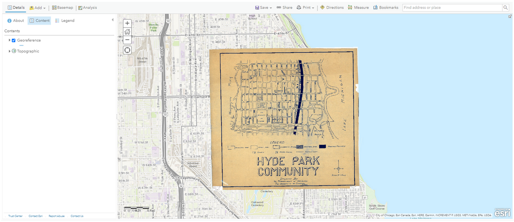

Georeferencing is a commonly used tool to accurately digitize data on a paper map. It uses a series of control points in the digital image to associate this image with spatial locations. The digital image could be an aerial photograph, a scanned map, or a picture of a topographic map. The georeferenced map can be used for basic map analysis, such as calculating distances and areas. In this tutorial, you will learn how to georeference a historical map by using ArcMap.
Tip
Click on any of the images in this tutorial to zoom in.
Zoom in to the study area: Hyde Park, Chicago, Illinois
Add Basemap and Zoom to Hyde Park
Click Add Data and choose the image “ark_61001_b2pn1qx6zj2q.jpg”
Click Customize -> Toolbar -> Georeferencing to add georeferenced tool
Click Fit To Display to show the image in the study area.
Fit Scanned Map to Display
Right click Layers -> Properties and select WGS_1984_Web_Mercator_Auxiliary_Sphere as the coordinate system.
Set Coordinate System
Click Viewer to show the image in a new window.
Click Add Control Points to select control points. Select control points from the viewer window, and then choose the corresponding location in the street map.
Add Control Points
Select control points in the area close to the four corners of the map.
Select additional control points. The more points you assign the more accurate your georeferenced map will be.
More Control Points
Tips
Here are some tips for choosing control points:
The number of control points needed depends on the image being used. Normally, at least four control points are required for georeferencing.
Choose road crossings or sidewalk intersections, because the edges of roads may change over time.
The control points should be spread across the unreferenced image.
Click View Link Table. It is up to you to determine the acceptable residual values. If a link has a residual value much larger than others, the link should be deleted.
Residual Values
After georeferencing, click Rectify to save the result.
In the layer property, change transparency to 50%. It is an easy to compare the georeferenced map locations with the real world locations.
Make Map Overlay Semi-Transparent
This topic is optional. To publish a hosted layer, you will need publishing privileges in your ArcGIS organizational account.
Warning
Publishing a tiled service to ArcGIS Online will consume credits, which are the currency used across ArcGIS. To estimate how many credits you will need to perform specific transactions or store data, you can refer to this website: https://doc.arcgis.com/en/arcgis-online/administer/credits.htm
Sign in with your university account.
Remove Basemap
Click File -> Share as -> Service
Choose Publish a service
Choose a connection and enter service name
Share as a Service
Select Tiled Mapping
Enter information in Item Description
In the Sharing tab, you can choose to share your service with yourself (private), your organization, or everyone (public)
Enter Service Information
Select appropriate levels of detail. Do not choose extreme large cashe size, which may consume all your credits.
Log in to ArcGIS Online and open the published map in your Content. The map can be digitized for further usage. For more information, please refer to the Digitizing tutorial.
Open in ArcGIS Online
 Estimated time to complete: 40-50 minutes
Estimated time to complete: 40-50 minutes


{kind=link}
{kind=link}
{kind=link}


{kind=link}